- Express probabilities for inference on knowledge graphs
- Generalize many different algorithms for machine learning
- Organize complex multivariate models to make inference tractable
Bayesian Graphical Models using R
Presentation for INRUG, September 2015
Joe Dumoulin
Director of Applied Research, Next IT Corp.
Why Graphical Models
What Are Graphical Models?
Graphs with random variables at the nodes.
Bayesian Graphical Models - Directed acylic graphs
Markov Graphical Models - Undirected graphs
Mixed Models - Directed and undirected edges
Bayesian Graphical Models - Directed acylic graphs (DAGs)
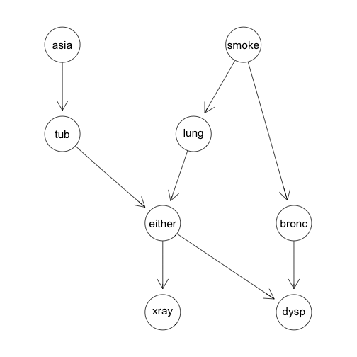
Diagnosing chest problems. This directed graph organizes conditional relationships between different variables related to causes and symptoms of lung problems.
Markov Graphical Models - Undirected graphs
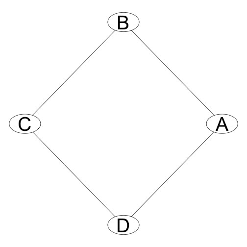
Some multivariate distributions cannot be represented by directed graphs. One example is the so-called misconception problem. In this case we have four people, A, B, C, and D some of whom have a misconception relation with each other: A misunderstands B 40% of the time, B misunderstands A 15% of the time and so on. the misconception relation is represented by the undirected edge between two people nodes on the graph.
DAGs and Probabilities
In general the graph of a distribution will be fully connected.
This graph represents a distribution that is something like \(P(A,B,C,D,E)\).
We would like to make the graph simpler to reduce the complexity and make it easier to infer results from the distribution.
We can simplify the graph by looking for Conditional Independencies.
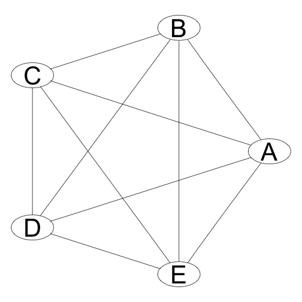
Simplifying Joint Probabilities
Bayesian Graphical models use some basic rules of probability theory, as well as some simple definitions, to simplfy inference over complicated joint distributions.
Chain Rule for joint distributions: \(P(A,B,C) = P(A)P(B|A)P(C|A,B)\)
Bayes' Rule: \(P(A|B) = \frac{P(A)P(B|A)}{P(B)}\)
Independence: \(A \perp B \rightarrow P(A,B) = P(A)P(B)\)
Conditional Independence: In distribution P, A is conditionally independent of B given C.
\(P \models (A \perp B | C) \rightarrow P(A|B,C) = P(A|C)\)
Independencies on Graphs
How can directed graphs represent independencies in a distribution?
A is independent of B
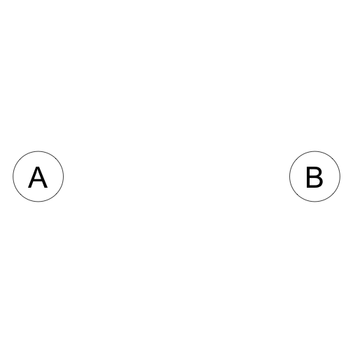 \[A \perp B\] \[P(A,B) = P(A)P(B)\]
A is conditionally independent of B given C:
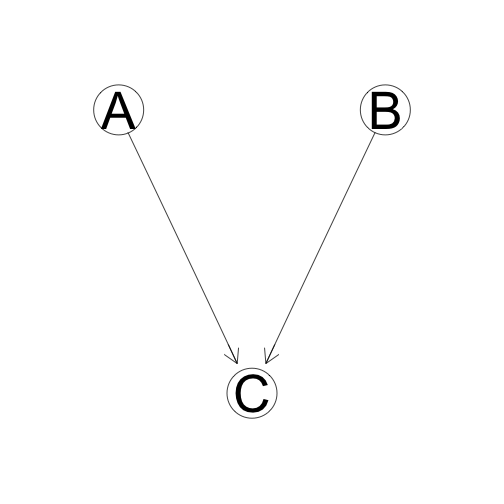 \[A \perp B|C\] \[P(A,B,C) = P(A)P(B)P(C|A,B)\]
Conditional independence and inference
In the case where Two Nodes A and C are separated, when When does knowledge of A infer knowledge of B? When is knowledge os A independent of knowledge of B? There are four basic graph expressions to represent different models of inference.
Causal Trail
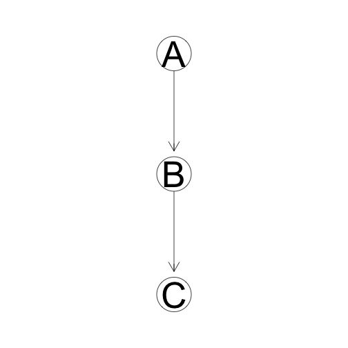
C is Indirectly 'Caused' by A unless we know B. If we know B, then C and A are independent.
Evidential Trail
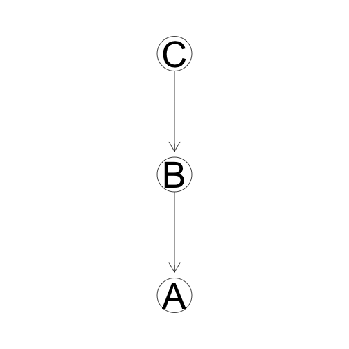
C indirectly provides evidence for A unless we know B. If we know B, then C and A are independent.
Common Effect
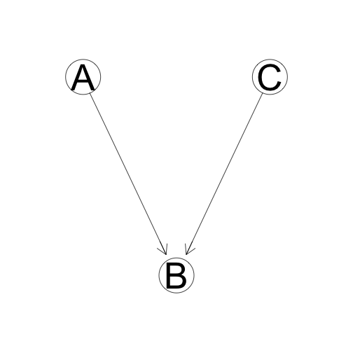
B is dependent on both A and C, but A and C are relatively independent unless B is known.
Common Cause
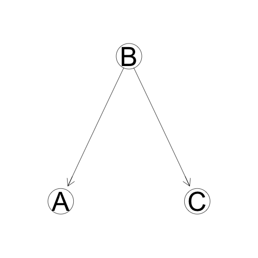
Both A and C are "caused" by (dependent on) B. If B is known, A and C are independent.
Features of Graphical Models
Naturally and visually express relationships between random variables
Easily visualize and calculate marginal probabilities.
Well-understood exact and approximate inference algorithms.
Easily visualize the composition of models over common variables.
Bayesian Network Inference in R
In the rest of this presentation we use the following packages:
gRain - Graphical Models with discrete distributions
gRim - Graphical Interaction Models. Create log-linear models from tabular data
Rgraphviz - Produce most of the graphs in this presentation.
Example: The Chest Clinic Example using gRain
We can look at a simple example of a joint distribution over discrete Binary valued random variables. The Chest clinic example[1] uses the following varianbles:
- A = Asia (Has the subject visited Asia?)
- S = Smoker (Does the subject Smoke?)
- T = Tuberculosis (Does the subject have tuberculosis?)
- L = Lung Cancer
- B = Bronchitis
- D = Dyspnoea (Is the subject experiencing shortness of breath?)
- X = X-ray (Has the subject had a chest X-ray done?)
- E = Either (Does the subject have either tuberculosis or lung cancer?)
With these eight variables we will create a directed acyclic graph (DAG) that lets us reduce the joint probability to a tractable form.
Example: The Chest Clinic Example Continued
given the variables \(V = {A, S, T, L, B, E, D, X}\), we have a joint probability \(p(\theta_v)\) where \(\theta_v\) is a particular set of values of each of the variables in \(V\).
g<-list(~asia, ~tub | asia, ~smoke, ~lung | smoke, ~bronc | smoke,
~either | lung : tub, ~xray | either, ~dysp | bronc : either)
chestdag<-dagList(g)
Which produces the following DAG:

Example: The Chest Clinic Example Continued
Using this dependency model we can add some example conditional probability tables:
yn <- c("yes", "no")
a <- cptable(~asia, values = c(1,99), levels = yn)
t.a <- cptable(~tub + asia, values = c(5, 95, 1, 99), levels = yn)
s <- cptable(~smoke, value = c(5, 5), levels = yn)
l.s <- cptable(~lung + smoke, values = c(1,9,1,99), levels = yn)
b.s <- cptable(~bronc + smoke, values = c(6, 4, 3, 7), levels = yn)
e.lt <- cptable(~either + lung + tub, values = c(1, 0, 1, 0, 1, 0, 0, 1), levels = yn)
x.e <- cptable(~xray + either, values = c(8, 2, 5, 95), levels = yn)
d.be <- cptable(~dysp + bronc + either, values = c(9, 1, 7, 3, 8, 2, 1, 9), levels = yn)
Example: The Chest Clinic Example Continued
we compile the model like this:
plist <- compileCPT(list(a, t.a, s, l.s, b.s, e.lt, x.e, d.be))
grn1 <- grain(plist)
summary(grn1)
## Independence network: Compiled: FALSE Propagated: FALSE
## Nodes : chr [1:8] "asia" "tub" "smoke" "lung" "bronc" "either" ...
Example: The Chest Clinic Example Continued
In order to perform queries on the tree we have to compile and propogate the model. This is done as follows:
grn1c <- compile(grn1, propagate = TRUE)
summary(grn1c)
## Independence network: Compiled: TRUE Propagated: TRUE
## Nodes : chr [1:8] "asia" "tub" "smoke" "lung" "bronc" "either" ...
## Number of cliques: 6
## Maximal clique size: 3
## Maximal state space in cliques: 8
Example: The Chest Clinic Example Continued
Compilation of the directed graph comprises:
Link all parents of a node
Convert the graph from directed to undirected
Create a clique tree for the resulting undirected graph.
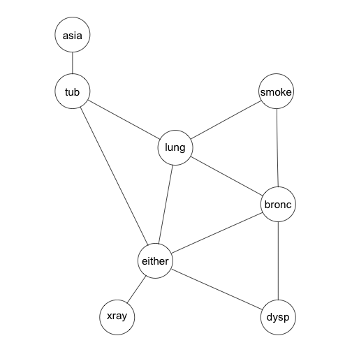
tmg <- triangulate(moralize(grn1$dag))
rip(tmg)$cliques
## [[1]]
## [1] "asia" "tub"
##
## [[2]]
## [1] "either" "lung" "tub"
##
## [[3]]
## [1] "either" "lung" "bronc"
##
## [[4]]
## [1] "smoke" "lung" "bronc"
##
## [[5]]
## [1] "either" "dysp" "bronc"
##
## [[6]]
## [1] "either" "xray"
Example: The Chest Clinic Example Continued
We can print the rip-ordering of the cliques:
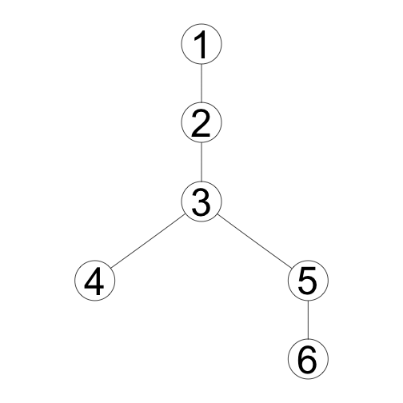
Example: The Chest Clinic Example Continued - Querying with Evidence
Suppose that a person has visited asia and suffers from shortness of breath. What are the marginal probabilities that the person has lung cancer or brochitis?
grn1c.ev <- setFinding(grn1c, nodes=c("asia", "dysp"), states=c("yes","yes"))
querygrain(grn1c.ev, nodes=c("lung","bronc"), type="marginal")
## $lung
## lung
## yes no
## 0.09952515 0.90047485
##
## $bronc
## bronc
## yes no
## 0.8114021 0.1885979
Example: The Chest Clinic Example Continued - Querying with Evidence
How does this change if the person is a smoker?
grn2c.ev <- setFinding(grn1c, nodes=c("asia","dysp","smoke"),
states=c("yes","yes","yes"))
querygrain(grn2c.ev, nodes=c("lung","bronc"), type="marginal")
## $lung
## lung
## yes no
## 0.1455191 0.8544809
##
## $bronc
## bronc
## yes no
## 0.8672582 0.1327418
Summary
Motivation for using Graphical Models
Simple Algorithm for Inference
An example showing graph construction and inference
Show how evidence affects predictions on the graph
Show basic commands in the gRain package.
Other Topics
Markov Networks
Inferring graph structure from data
Recurring graphs (Modeling temporal systems)
Modeling causality on graphs
Partially observable varaibles on a graph.
Thank you!
Questions or Comments?